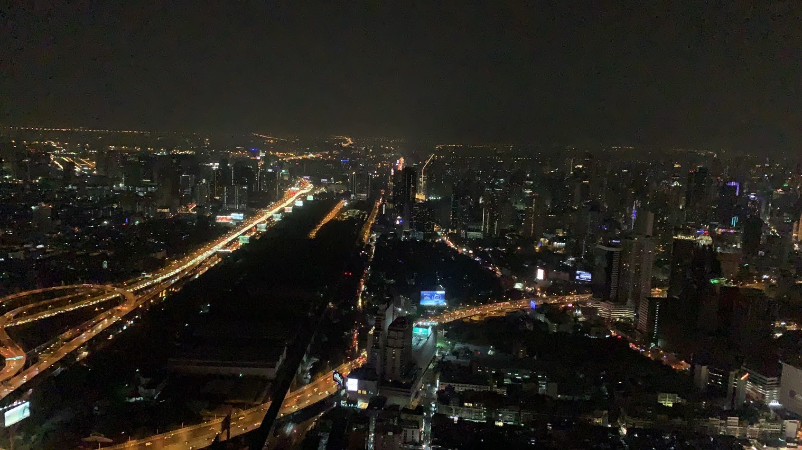
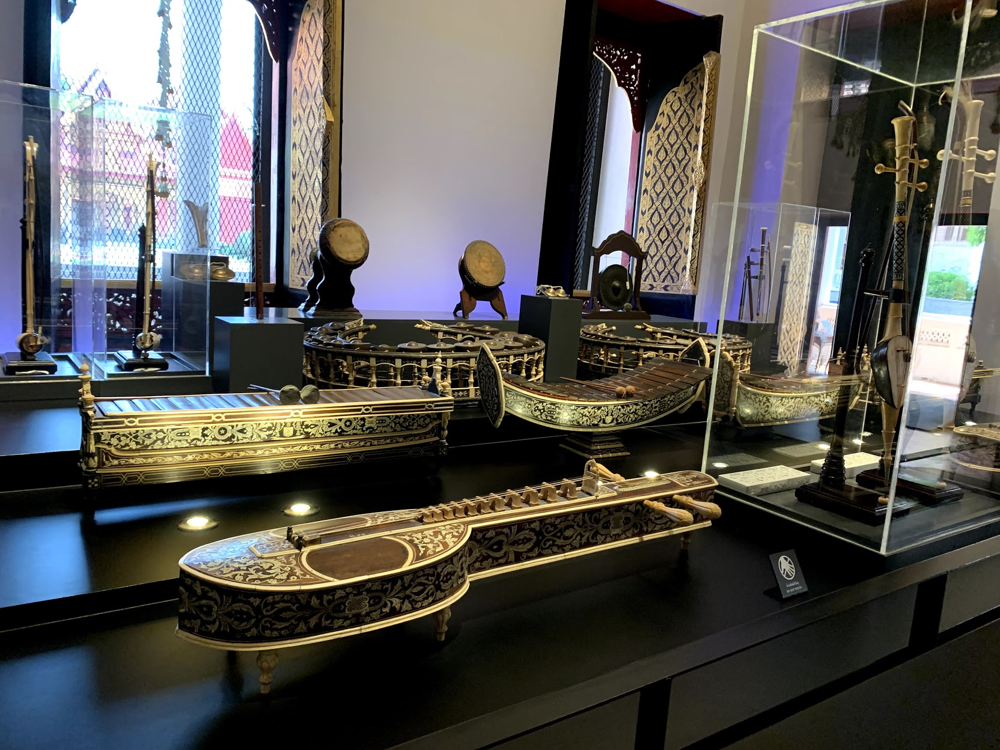
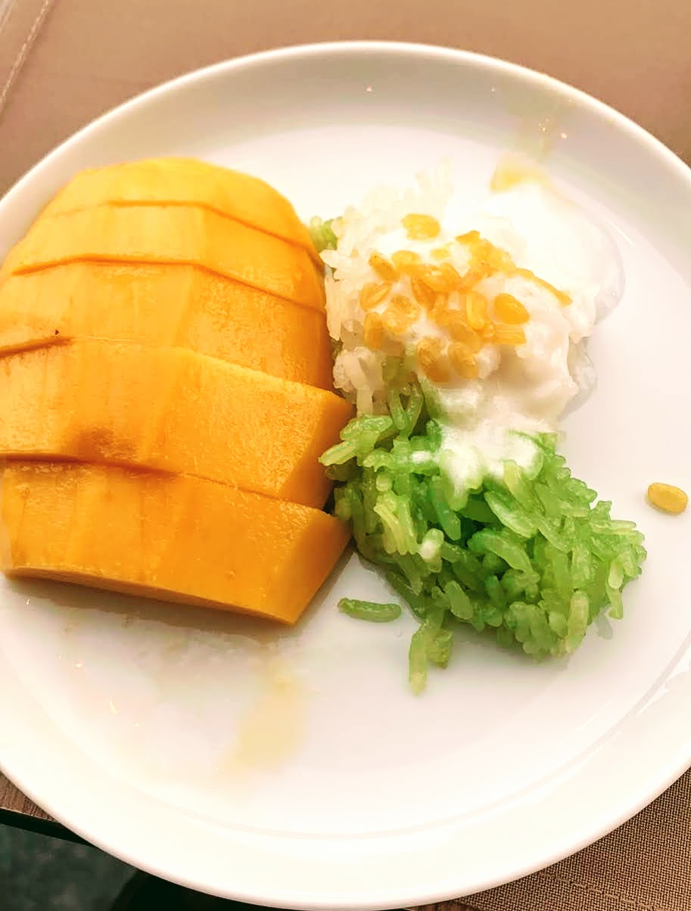
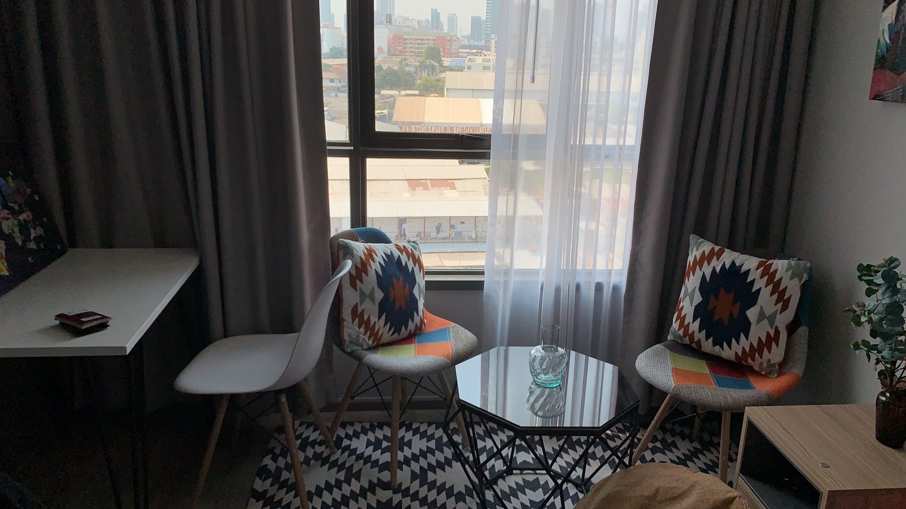

为什么去曼谷
二月初，国内疫情处于爆发状态，美国突然宣布禁止14天到过中国的外国人进入美国，而我的航班刚好卡在了那天，改签也没有合适的航班，只能选择免签或落地签的第三国中转，备选方案有迪拜、韩国、泰国等。最后考虑种种因素，踏上了去泰国曼谷中转的路。

曼谷夜景，拍自居住的Baiyoke Sky Hotel所在的曼谷摩天大楼Baiyoke Tower
曼谷半月游
说是游，倒不如说是避难，考虑到疫情，大部分时间只是待在酒店或者民宿和同学朋友打王者荣耀。唯一一次出游还是和因同在泰国避难而认识的W君包车小转了一下曼谷，我们去了大皇宫，博物馆，一个很出名但我一时想不起名字的市场，只记得外国人和酒吧特别多。
因为皇宫不让穿短裤进去，只得现场买了一条泰式裤子
由于当天温度过高，并没有什么特别好的体验，也可能是因为作为一个无神论者，天生对这样的宗教建筑不是特别感兴趣，反而博物馆我们倒是呆了很长时间，一来免去了日晒，二来可以了解泰国几千年来的历史文化积累。

看完博物馆最大的感受就是泰国佛教文化的盛行以及泰国文化受中国文化的巨大影响。
曼谷衣食住行
曼谷作为泰国的首都以及世界知名的旅游城市，在衣食住行上也有它的特点和魅力。
最让我怀念的莫过于曼谷的芒果美食，比如芒果糯米饭与随处可见的芒果冰沙，一份80泰铢的价格，对于在湾区生活的我来说简直良心。各种地摊美食也比比皆是，甚至皇宫边上也满是卖各种平价零食饮料的摊贩。
不过对于宅在酒店的我来说，最重要的莫过于堪比国内的方便的外卖。东南亚主要使用Grab这个平台来点外卖或者打车，至于外出觅食，则主要使用谷歌地图和大众点评。Grab上面的食物种类倒挺丰盛的，快餐、日料、泰餐、中西餐都有，唯一让我吐槽的点是国际化做的太差，作为一年几千万外国旅客的旅游城市，竟然很多只有泰国菜名，我只得拿出了谷歌翻译的识图功能（不得不说谷歌翻译的这个功能用户体验真差，算了不吐槽自家产品了:)）。
总体上来说曼谷的食物还是比较丰富，大部分也符合中国人的饮食习惯，毕竟和日本一样都是以米饭为主食的国家。价格上也不太贵，比北京便宜多了，更不用说和湾区比了。

曼谷的酒店还算住的蛮舒服的，大概300-400一晚的价格就可以在核心地区住的比较舒服了，而同样的价格在北京恐怕只能住廉价快捷酒店了。民宿资源也很丰富，至少远超3年前为了面试Airbnb，特意在北京找airbnb体验的时候。一开始住的是Baiyoke Sky Hotel，但是缺乏洗衣机、微波炉等必要设施，以及为了多体验曼谷不同地区的生活，特意找了一个特别漂亮的民宿，价格也差不多，是在一个高档的小区，host的服务质量也很不错。
在房价爆炸的北京和湾区生活的我，习惯性的搜了一下房子的价格，小户型33平方米大概86万人民币，租金大概3300人民币，用作民宿300人民币一天，这收益率和性价比比北京高太多了。

高档小区外是成片的类贫民窟建筑
曼谷的出行可以说是一言难尽，如果要赶重要的事情，切记提前很久出发，否则拥挤的交通，随意穿行的突突车会让你崩溃。曼谷的堵主要还是基础设施不行，路窄，规划不好，车又多，估计也没有北京的限号政策。很多小路两边的摊贩也加剧了拥挤程度。
作为一个国际旅游城市，司机的英语水平也十分堪忧，基本只能靠比划，好在用App就可以直接设定目的地。不过酒店、餐厅以及一些其他服务业的人员还是会说一些基本的英语的，这点估计还是比北京强，毕竟北京一年国际旅客只有300万左右，而曼谷几乎2300万的国际旅客位列世界第一。
此外值得一提的是，曼谷随处可见便利店和药店，简直和东京有得一拼，对于喜欢在便利店觅食的我来说太方便了。
总结
这次曼谷的意外之旅还是给了我许多收获，未来有机会的话希望能够再来好好玩耍一次。希望疫情快点过去吧！